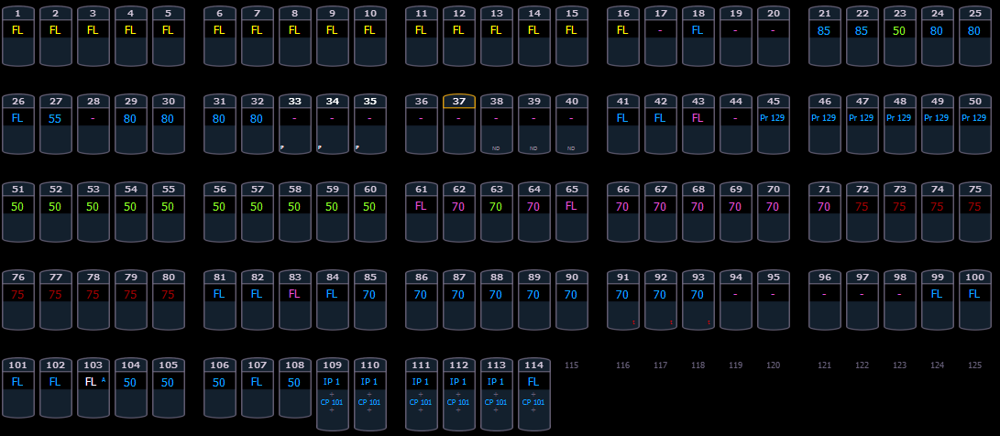
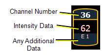
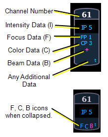
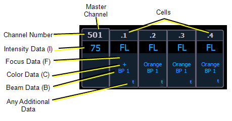
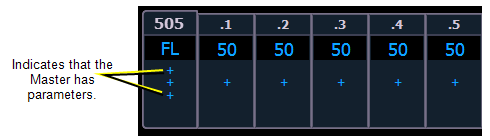
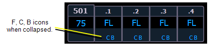
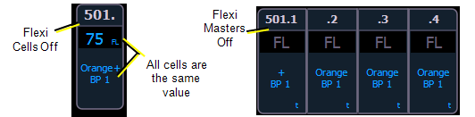
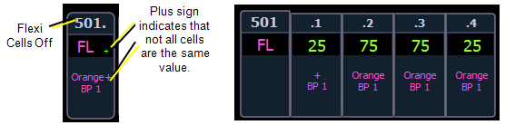
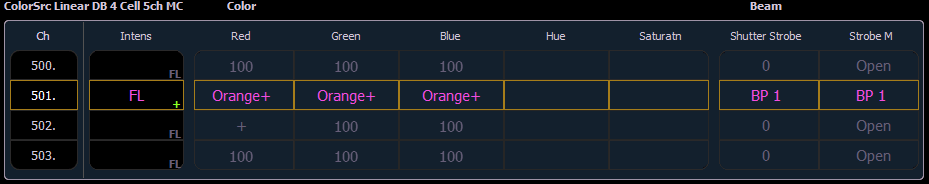

Ion relies on many traditional ETC indicators which you may be familiar with, as well as some new ones. This section identifies the conventions used in Ion to indicate conditions to you.
This is the Live/ Blind summary view. Please note examples of color and text indicators in the following graphic:

Note: The color and text conventions apply regardless of the format of Live/ Blind being used (see Using [Format] ).
Note: When manual channels are used, there will be an advisory that says "Manual Channels" in red in the upper left hand corner of any Live display.
Most of the channels in the above image are conventional channels (intensity is the only available parameter).
Several channels in the image are moving lights (possessing more parameters than just intensity).

Conventions display only the top field, intensity, as no other parameters are available on a conventional channel.

This view also has additional data fields beneath intensity (F, C, B). This information can be suppressed by pressing and holding [Data] and any of the encoder paging keys (Focus, Color, Image, Shutter, or Form). Doing so will leave only the intensity field and FCB indicators at the bottom of the channel.


Parameter data can also be suppressed in the same way as moving lights.

You can use flexichannel modes to hide cells or master channels. See Using Flexichannel for more information.
When in Flexi Cells Off mode, the master channel will display its own information in the normal font size, and data indicators will be used for the cells. If all of the cells are at the same value, that value will display. If the majority of the cells are at the same value, that value will be displayed with a superscript plus sign. If there is not a majority, just a plus sign will be used.
Note: A decimal will display at the end of a master channel when flexi cells off is on.


When using Flexi Cells off in table view, plus signs are also used to indicate a difference in the cells.
